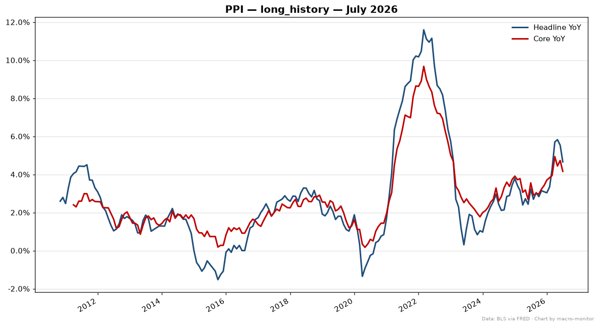
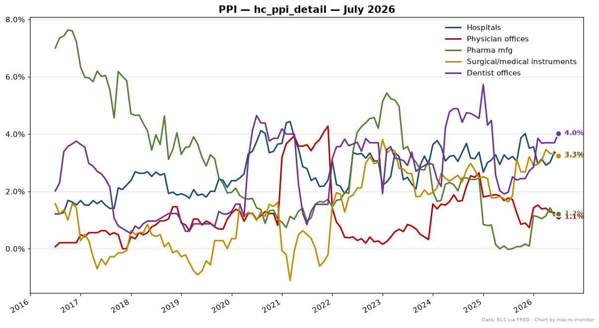

main

| Series | Primary | Also | Prior |
|---|---|---|---|
| Headline (Final Demand) (PPIFIS) | -0.34% | yoy_pct 4.66% · mom_pct -0.03% | -1.34% |
| Core (Final Demand less Food & Energy) (PPIFES) | 2.95% | yoy_pct 4.16% · mom_pct 0.24% | 4.82% |
Anchor: PPIFIS (annualized_mom) · delta z-score vs 5y: +0.21σ
| Trend | Stat | Value |
|---|---|---|
| 3mo annualized | annualized_mom | 1.25% |
| 6mo annualized | annualized_mom | 5.44% |
| Series | Transform | Value |
|---|---|---|
| Hospitals PPI (PCU622622) healthcare | yoy_pct | 3.27% |
| Physician offices PPI (PCU621111621111) healthcare | yoy_pct | 1.11% |
| Pharma preparation mfg PPI (PCU325412325412) healthcare | yoy_pct | 1.22% |
| Surgical & medical instruments PPI (PCU339112339112) healthcare | yoy_pct | 3.23% |
| Dentist offices PPI (PCU621210621210) healthcare | yoy_pct | 4.02% |

